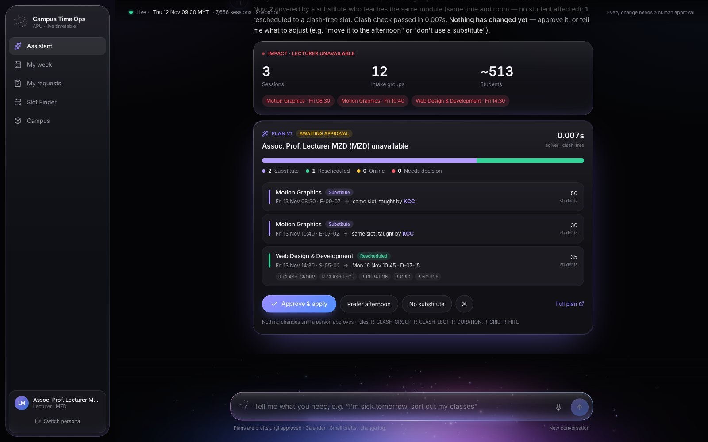
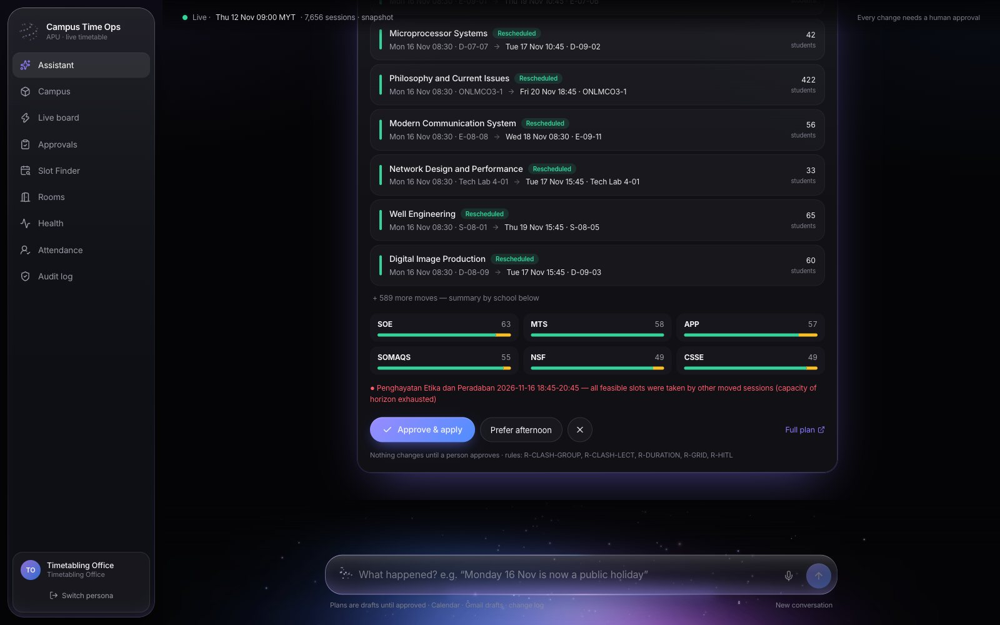
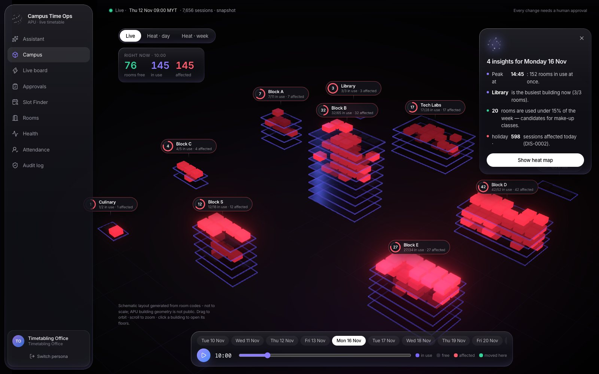

The AI operations layer for APU's timetable: plan, re-plan and run the campus, with a human approving every step.
A sick lecturer, a flooded room or a surprise holiday means phone calls, spreadsheets and emails. APSpace shows timetables. Nothing re-plans them.
One assistant for three roles: timetabling office, lecturer, student. Each sees only what they need.
| Rule | What it enforces | Source |
|---|---|---|
| R-ATT-80 | 80% attendance for each module | Student Handbook §2.2 |
| R-NOTICE-HB | As much notice as possible of timetable changes | Student Handbook §3.1 |
| R-HOL | No make-up classes on public or university holidays | APU Holiday Schedule 2026 |
| R-SHUTTLE | Physical classes end 15 min before the last shuttle | APU shuttle PDF, 22 Oct 2026 |
| R-SUB-* | Substitute teaches the module, is free, ≤ 3 sessions that day | Prototype rule (labelled) |
| Disruption | Classes | Solve | Outcome |
|---|---|---|---|
| Sick lecturer (10 busiest) | 33 | 0.001 s | 67% covered by a substitute, rest rescheduled |
| Room closed Mon–Fri (5 busiest) | 101 | 0.067 s | 100% stay physical |
| Whole-campus holiday (3 days) | 1,806 | 2.57 s | 93.9% physical · 5.6% online · 0.5% open |
One sentence. One plan. One click. With a human approving every step.


